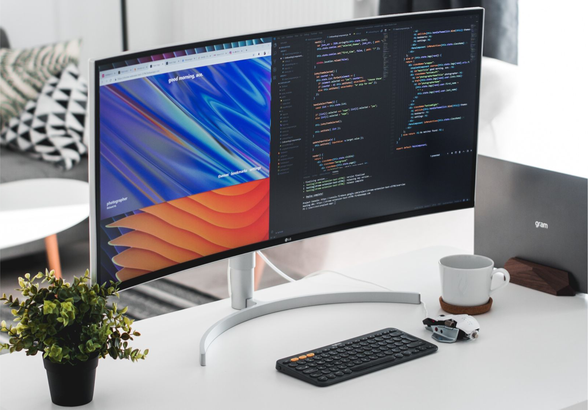
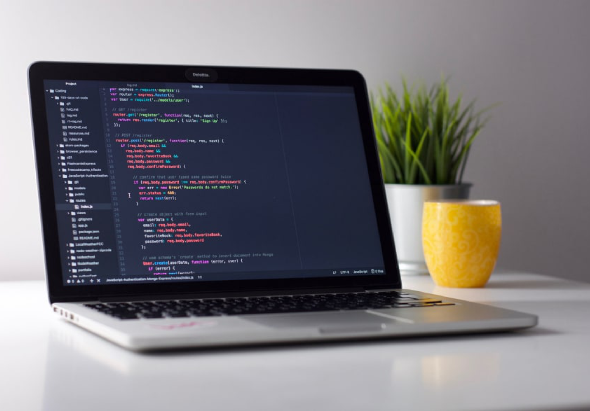

Tech Stack


Bootstrap 4
HTML
CSS
Alasan Join NWDC
Aku join NWDC karena pengin dapat uang dari buat website

Front-End
Bagian front-end dari sebuah website adalah bagian yang langsung dilihat oleh user. User juga bisa langsung berinteraksi pada bagian ini. Bagian ini dibangun menggunakan HTML, CSS, dan JavaScript.
Back-End
Back-end adalah bagian belakang layar dari sebuah website. Bahasa pemograman untuk back-end development diantaranya adalah PHP, Ruby, Python, dan banyak lainnya.

" Semakin berjalannya waktu aku merasa banyak kesempatan telah terlewatkan, dari situ aku mulai belajar tidak ada yang namanya waktu yang tepat, mencoba mengambil setiap kesempatan yang ada termasuk oprec ini "